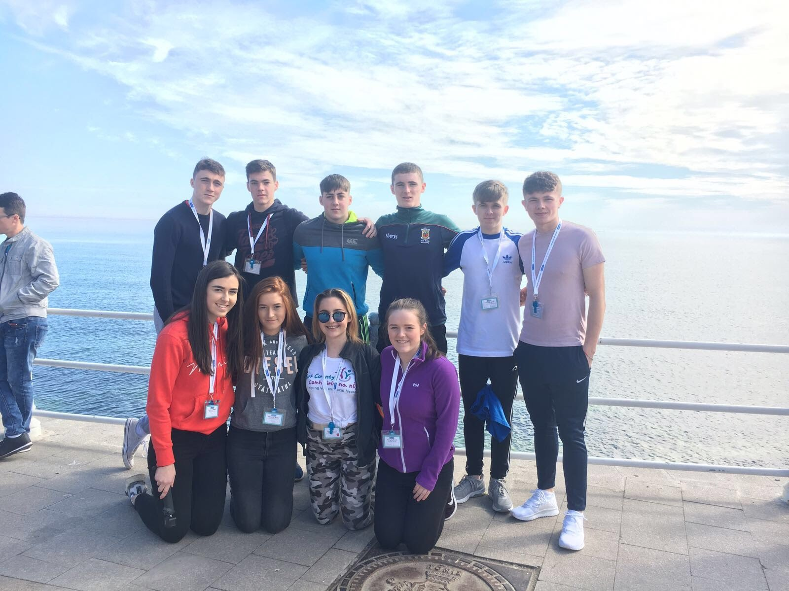
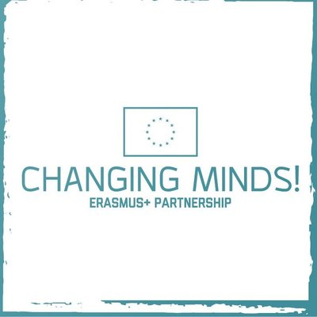
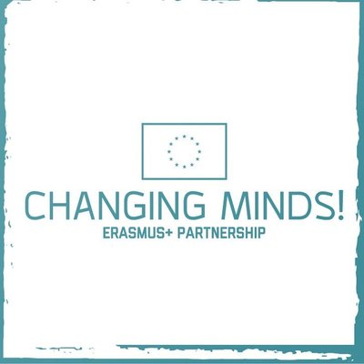
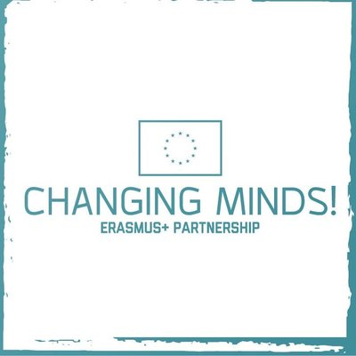

Changing Minds is a 13 month strategic partnership involving
Aurelia Trust
Skibbereen Community School
St. Gerald’s College (Castlebar)
The Ludgate Hub
A.T.I.C. Galati
D.G.A.S.P.C. Constanta
Liceul Teoretic, Negru Voda
Changing Minds! is a project which aims to exchange practices between
a diverse range of youth and community based organisations in both Ireland and
Romania which deal with young people in the area of youth work, disability,
challenging stereotypes and influencing policy.
With the help of the latest digital technology, the overall objectives,
supporting the main aim of exchanging and learning from models of good practice are:
(1) To change attitudes and prejudices often encountered in Ireland in relation to
people from less developed countries (this partnership will focus on negative attitudes
towards people from Romania which, if successful, will lead to be people becoming more
positive and welcoming towards EU citizens from ALL countries).
(2) To change negative perceptions of disability which are evident in less developed
EU countries (again we will start by focusing on Romania – and then expanding to
include all countries).
Central to this will be two learning activities, whereby young Irish and Romanian
people will be given the opportunity to gain first-hand experience of working with
people with disability within Romania, as well as taking part in interactive workshops,
conferences and being upskilled in digital media technology. It is hoped that this
exchange experience will help the young participants to promote change amongst their
peers and at local and regional level, whilst at the same time attempting to impact
on policy change at EU level.


Follow us on our social media accounts!
Facebook @euchangingminds
Snapchat @changingmindseu
Twitter @euchangingminds
Instagram @euchangingminds
Website: www.changingminds.eu


 
